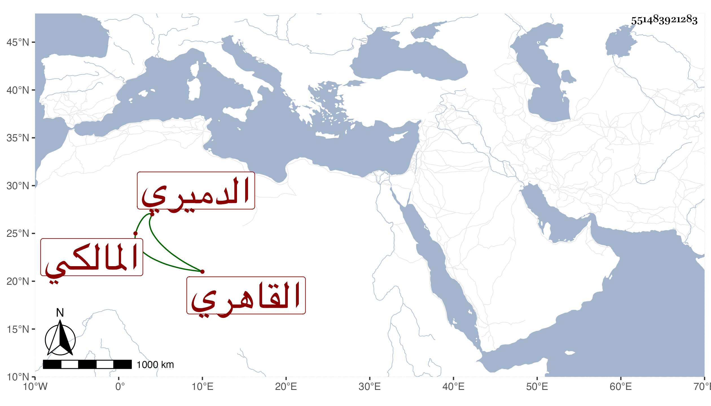

0902Sakhawi.DawLamic.ITO20230111-ara1.EIS1600.551483921283
Biography ID: 551483921283
1076
محمد بن أحمد بن عبد الملك الشمس الدميري ثم القاهري المالكي ناظر البيمارستان ومفتي دار العدل . ولي الحسبة مرارا أولها في أيام الأشرف شعبان وكذا ولي نظر الأحباس وقضاء العسكر مع نقص بضاعته ولكنه كان عارفا بالمباشرة وحصل في المرستان مالا كثيرا جدا وفره مما كان غيره يصرفه في وجوه البر وغيرها فاتفق أن الناصر أخذ منه في بعض التجاريد جملة مستكثرة . مات في رمضان سنة ثلاث عشرة . ذكره شيخنا في إنبائه وقد زاد عليه في صنيعه في البيمارستان الولوي السفطي كما سيأتي .
